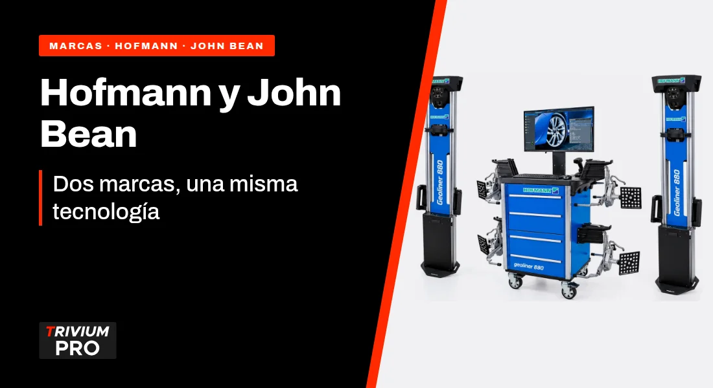

En el mundo del alineado automotriz, dos nombres sobresalen: Hofmann y John Bean. Aunque muchos creen que se trata de equipos completamente distintos, la realidad es otra: son esencialmente las mismas máquinas, fabricadas por el mismo grupo industrial.
🔧 ¿Por qué son iguales?
Tanto Hofmann como John Bean pertenecen al grupo Snap-on, un gigante estadounidense del equipamiento automotriz y herramientas de precisión.
- Hofmann nació en Alemania y es reconocida en todo el mundo por su ingeniería de precisión y calidad. Snap-on la adquirió hace años para integrarla a su portfolio.
- John Bean es otra de las marcas de Snap-On.
Hoy, las alineadoras Hofmann y John Bean comparten la misma plataforma tecnológica:
✅ Misma electrónica interna.
✅ Mismo software.
✅ Mismos sensores y cámaras.
✅ Mismo hardware.
La única diferencia está en el nombre y la estética exterior, ya que Snap-on decidió mantener ambas marcas por el gran prestigio que Hofmann tiene en el mercado europeo y latinoamericano.
✅ ¿Por qué importa saberlo?
Saber que Hofmann y John Bean son técnicamente iguales tiene varias ventajas para los talleres y concesionarios:
- Repuestos compatibles. Las piezas son intercambiables, facilitando el servicio técnico.
- Actualizaciones idénticas. Los datos de alineación y el software se actualizan de la misma forma.
- Misma precisión y confiabilidad. No estás eligiendo un equipo inferior por optar por una marca u otra.
En definitiva, la elección entre Hofmann o John Bean es una cuestión de marca, no de tecnología. Y Hofmann, gracias a su herencia alemana, mantiene un fuerte prestigio en mercados como Argentina.
Trivium Center: Distribuidor Exclusivo Hofmann en Argentina
En Trivium Center somos distribuidores oficiales y exclusivos de Hofmann en Argentina. No solo comercializamos equipos, sino que también ofrecemos:
- Capacitación técnica.
- Instalación profesional.
- Servicio técnico oficial.
- Actualizaciones de bases de datos y software.
Si estás pensando en invertir en una alineadora de última generación o en actualizar tu equipo actual, elegir Hofmann es elegir tecnología Snap-on, con respaldo y servicio local.
¿Querés saber más sobre las alineadoras Hofmann?
Escribinos por WhatsApp y te asesoramos sin compromiso. Somos distribuidores exclusivos Hofmann en Argentina.
💬 Consultar por WhatsApp